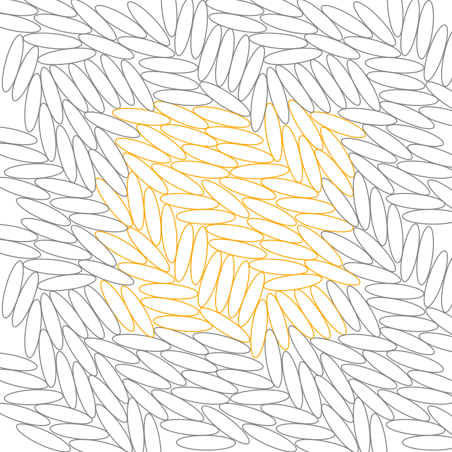
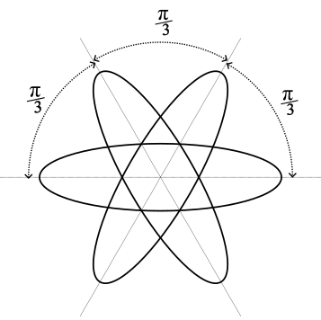

A Measure of Alignment
During the summer holidays I stumbled on a printed copy of my old degree dissertation. It’s over 25 years old and I was pleasantly surprised by the writing style but no so much about the structure - no clear explanation of what was being demonstrated and the conclusions were a bit lacking.
The project itself was to use Monte Carlo simulation techniques to discover things about the phases of idealised liquid crystals, modelled as ellipses and ellipsoids in 2 and 3 dimensions. The original code was written in C (much to my tutors chagrin who wanted me to use FORTRAN).
For some reason, last weekend I though it would be a good idea to rewrite it Julia. So I did and it worked so much better (faster) than back in 1997. Maybe I’ll be able to finish the original aims of the dissertation, 25 years later!

One of the properties of liquid crystals is that, at low enough temperatures and high enough pressures, they align with each other in much the same way they do on LCD displays when a voltage is applied. My simulations were able to recreate this effect (see Figure 1). They measured the density of the simulated material, which obviously increases the more the crystals align. I did notice that there wasn’t a direct measure of alignment… so why not invent one?
I needed a formula that I could sum pairwise over all the crystals (ellipses). Ideally the measure should be 0 if all the ellipses are totally unaligned and 1 if totally aligned. Taking two ellipses first, the obvious choice matching these criteria is the cosine of the angle between them, basically cosine similarity. This gives exactly 1 if ellipses are aligned and exactly 0 if they are perpendicular. The ellipses have a symmetry where they should also be measured as aligned if the angle is 180º. I this case the cosine is -1 when it should be 1. A simple way to achieve this is to take either the absolute value of the cosine or its square. This latter option has a nice symmetry to it. Averaging over the \(n^2\) terms we have a first stab at an alignment formula, \(A\):
\[ A = \frac{1}{n^2}\sum_{i,j = 1}^n cos^2(\theta_i-\theta_j) \]
Where \(i\) an \(j\) enumerate over the \(n\) ellipses to be measured and \(\theta\) is their respective orientation. To test my formula I generated different configurations and tested their alignment. If all the angles where the same then the alignment did indeed come out as exactly 1. However I realised that there is no way to make more than 2 ellipse totally perpendicular in 2 dimensions. They will always align somewhat with the first or the second. When there are more ellises the situation is worse.

Obviously, the minimum posible alignment of 2 ellipses is when the angle between them is \(\frac{\pi}{2}\) radians, orthogonal. After scratching my head for a while and running different tests, I realised that 3 ellipses is when the angle between them is exactly \(\frac{\pi}{3}\) radians (see Figure 2).
A similar thing happens with larger numbers of particles where the minimum has then dividing the circle equally. This is obviously true for 2 ellipses and I can prove it for 3. I’m taking it to be the case for now.
After a bit of thinking the way to calculate this minimum, \(M\), is to make the following sum:
\[ M = \frac{2}{n(n-1)}\sum_{k=1}^n (n-k)cos^2(\frac{k\pi}{n}) \]
Where \(\frac{k\pi}{n}\) is the angle of the kth ellipse and there are \((n-k)\) ellipses with that angular separation. We divide by the number of pairs counted. With a bit of help from the internet this is solvable and has a simple closed form. Using the identity:
\[ cos^2x = \frac{1+cos 2x}{2} \]
and the orthogonality of the cosine funtions we have:
\[\begin{aligned} M&= \frac{2}{n(n-1)}\sum_{k=1}^n (n-k)(1+cos \frac{2k\pi}{n}) \\ &= \frac{2}{n(n-1)}\left(\sum_{k=1}^n (n-k) + n\sum_{k=1}^n cos \frac{2k\pi}{n} - \sum_{k=1}^n k \cdot cos \frac{2k\pi}{n}\right) \\ &= \frac{2}{n(n-1)}\left(\frac{1}{2}(n - 1) n - n - \frac{-n}{2}\right) \\ &= \frac{1}{n(n-1)}\left(n^2-n - 2n + n\right) \\ &= \frac{1}{2}\left(\frac{n-2}{n-1}\right) \\ \end{aligned}\]
Validate: \(n=2 \implies M=0\), \(n=3 \implies M=¼\), \(n=4 \implies M=⅓\), etc.
Also: \(\displaystyle \lim_{n \rightarrow \infty}M=½\) as required.
I wanted to factor out this minimum alignment bias from the calculation so that the alignment would always be in the range from 0 to 1. To do that we calculate the proportion between \(1-M\) and \(A-M\). So the new formula is:
\[ A' = \frac{A-M}{1-M} = \frac{2 A (n - 1) - (n - 2)}{n} \]
I’ve tested this with different distributions of angles and it gives a reliable indicator of the alignment. The only thing is that the cosine squared makes it quite non-linear having a tendency to be closer to the extremes, 0 and 1. To counteract this an inverse straightens out the results for a smoother gradient, so
\[ A'' = 1 -\frac{2}{\pi}cos^{-1} \sqrt{A'} \]
might give better results depending on the application.